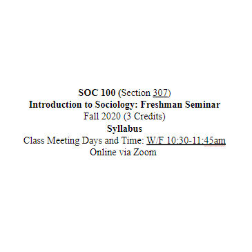

In Sociology 491, we explored the basic concepts and characteristics of Sociology, using an experiential learning approach. Basic sociological concepts are used to develop a better understanding of the individual in society, the organization of society and society as it changes. Topics included culture, socialization, social interaction, inequalities of race, class and gender, political economy, and sociological theory and method. To engage these topics, students will complete assignments that require practicing basic sociological research methods (e.g. interviews, observations, etc.). I expected my students to actively engage with class materials, write discussion post responses before the next class, and incorporate lecture and discussion content into their posts. I encouraged them to think creatively and emphasized my genuine interest in their discussion posts. Additionally, I assigned two 1500-word Vignette Papers, which allowed students to explore sociological concepts using real or fictional experiences they found interesting. These assignments aimed to spark their curiosity about sociology. Throughout the class I emphasized the importance of actively pursuing knowledge and taking control of one’s life through learning. I encouraged them to continue learning beyond the classroom through books, podcasts and movies.
This experience helped me decide if I wanted to pursue a Masters of Sociology, which I was on track for at this time. I came to realize that I wanted something different out of life and that learning the ins and outs of our society is not for the faint of heart, due to the miles of injustice intertwined in its foundation. I changed career paths to Computer Science in order to build a life I wanted to live. It is my hope that I can use my sociology degree alongside my future computer science degree to put both passions to work.